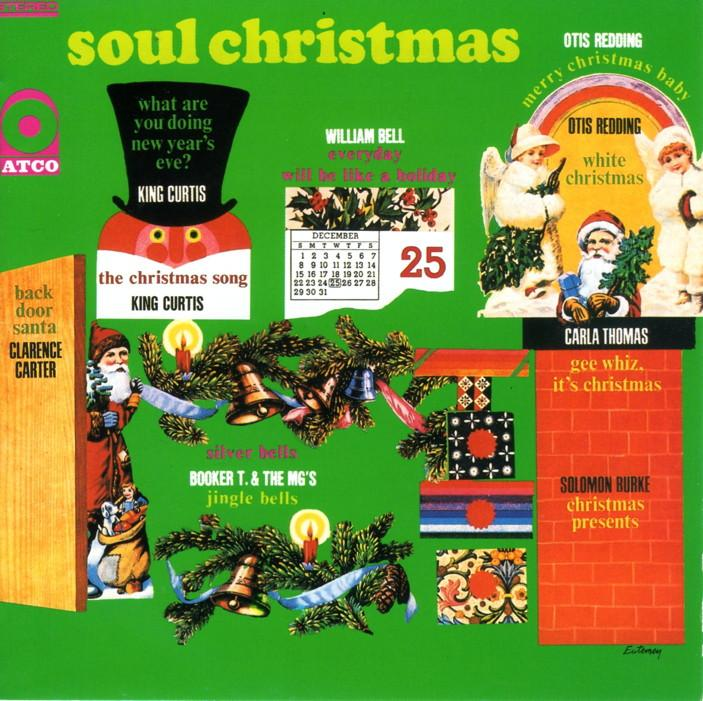

3 min read

Listen on Apple Music.
This song was originally recorded in 1947 by Johnny Moore's Three Blazers, featuring Charles Brown on piano and vocals. Composition credits are disputed, but it appears that Charles Brown had a large hand in the music, lyrics and original arrangement.
The original recording was a hit on the Rhythm and Blues charts, and the song has been recorded by many blues and R&B artists down through the years, including respectful covers by Elvis Presley and Bruce Springsteen.
The lyrics recount the happy tale of a man feeling appreciative of his wife/girlfriend on Christmas morning, after opening his many presents.
The tune began life as a slow, quiet bluesy number, with relaxed vocals, and often with a piano tinkling quietly in the background. The original lyrics included the lines “Haven't had a drink this morning, but I'm all lit up like a Christmas tree.” Even without this avowal, though, most early renditions conjure up visions of empty glasses and perhaps a few bottles interspersed with the presents.
But then, in 1967, Otis Redding and the famous Stax/Volt house band – including Booker T. Jones on keyboards, Steve Cropper on guitar, Donald “Duck” Dunn on bass and Al Jackson Jr. on drums – breathed new life into the composition with a soulful, uptempo rendition seemingly fueled by pure joy. While still relaxed, the locked-in rhythm section, organ and horns practically demand that the listener move in time to the music.
Merry Christmas, baby,
Sure did treat me nice.
Merry Christmas, baby,
Sure did treat me nice.
Bought me a diamond ring for Christmas,
I feel like I'm in paradise.I feel mighty fine, y'all,
I've got music on my radio.
Feel mighty fine, girl;
I've got music on my radio.
I feel like I'm gonna kiss you,
Standing beneath that mistletoe.Santa came down the chimney,
Half past three, y'all.
Left all them good ole presents
For my baby and for me, ha, ha, ha!Merry Christmas baby,
Sure did treat me nice.
You bought me all those good ole presents.
I love you baby for the rest of my life.Merry Christmas, girl,
Merry, merry, merry Christmas baby.
Sure did treat me nice
Merry Christmas baby
I said you sure did treat me nice
You bought me all those lovely things, yeah
I feel like I'm in paradise.I wish you a merry Christmas baby,
Happy new year, ha
A merry Christmas, honey
Everything here is beautiful
I love you, baby
For everything that you give me
I love you, honey.
Otis adds many of his signature vocal embellishments to the song, including a heartfelt and deeply rhythmic “Ha Ha Ha!” somewhere in the middle, as well as an improvised ending allowed to fade out, but not before Redding remarks that “Everything here is beautiful!”
Jackson Browne may grant us our right to “anything that frees us,” and bid us pleasure and cheer, but it's Redding who fully expresses those feelings for me. While this song is decidedly secular, Redding and his band make a convincing case that there's a pure and untainted joy to be had from exchanging presents with loved ones in front of the tree on Christmas morning, while listening to good music on your radio, and I'm not going to be the one to argue with him. As long as I've got music like this to play, I'll just turn it up and enjoy all the blessings the holiday may bring.
Redding's recording is available on CD as part of a number of collections, but the best is the original Soul Christmas album.
Next: “Christmas Time Back Home” by The Country Gentlemen
Or see the complete list of Christmas Favorites from The Practical Utopian.